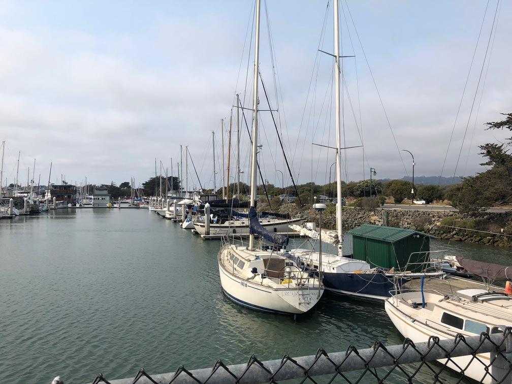
After manually selecting points to create a mosaic in part 4a, we want to automate the entire panorama-making process. To do this, we autoselected alignment points between two images.

Good candidates for alignment points are ones that are distinguishable between the images and are visually different from other points. The best points for this purpose is corners, because they can be localized in a single point and found even after the second image has been transformed. To detect these corners, we used a Harris corner detection method, which looks at how the average image in a patch changes as it is moved. If the patch value changes dramatically in multiple directions, we can infer that there is a corner.
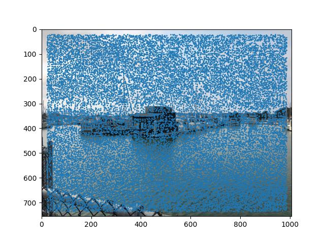
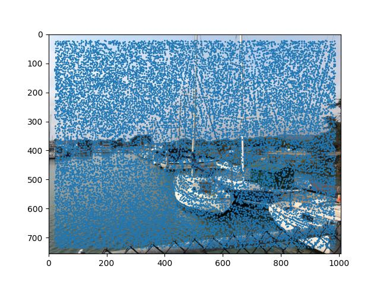
Notice how there are many points spread out over the images, some of them are not at corners. To clean up the points and remove points with weaker average changes, we used a method called Adaptive Non-Maximal Supression. This method looks at all the points and their neighbors, and determines the radius where a point is a local maximum. Then, we take the first 500 points with the largest radii, which are the strongest points that are evenly spread over the image.
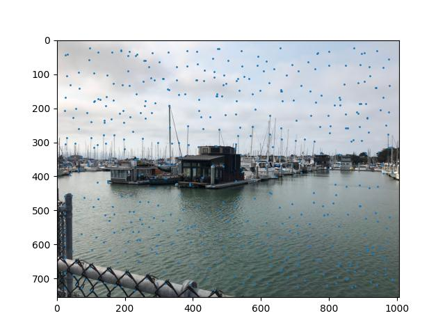
We now want to match these points to its corresponding point on the other image. To do this, we build a feature descriptor- an 8x8 patch around each point that acts as a sample of the image. We then compare these descriptors across the images, and the ones with the highest SSD are said to correspond. However, because we have points located in areas not overlapping, those points may mistakenly be mapped to the other image. To remove these outliers, we follow the Lowe method- we look at the second nearest neighbor, and if that second is close to the first corresponding descriptor, we deem it as incorrect overall.
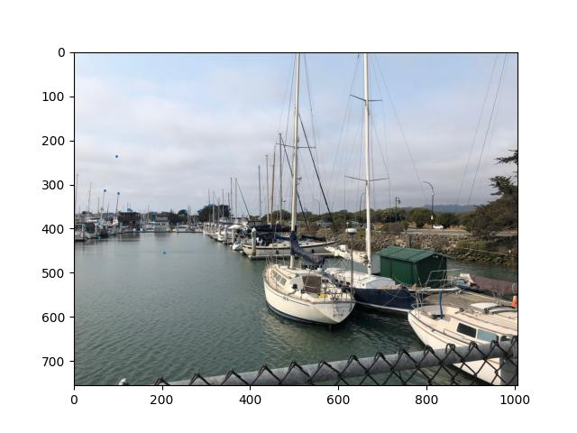
After finding the correct correspondances, we have to find the correct homography transform. We can find a homography matrix using the same method as described in 4a, but there may still be a few outliers. To remove these, we use the RANSAC method. We randomly pick four correspondances to create a homography matrix, and see if the transformation applied to the other points is close to the corresponding point according to a threshold. We create a set of these inliers, and repeat the process an arbitrary amount of times. The homography matrix that we select then, corresponds to the matrix we used for the matrix with the largest set of inliers.
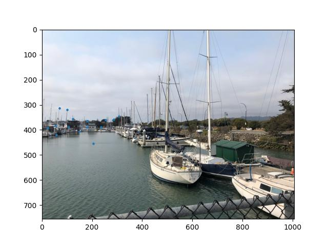
Finally, we warp and blend the image using the same technique as in 4a.
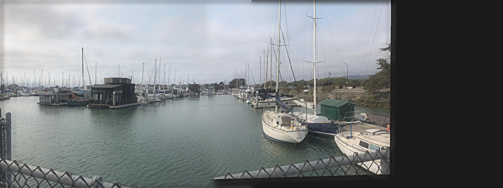

Here are some more mosaics!
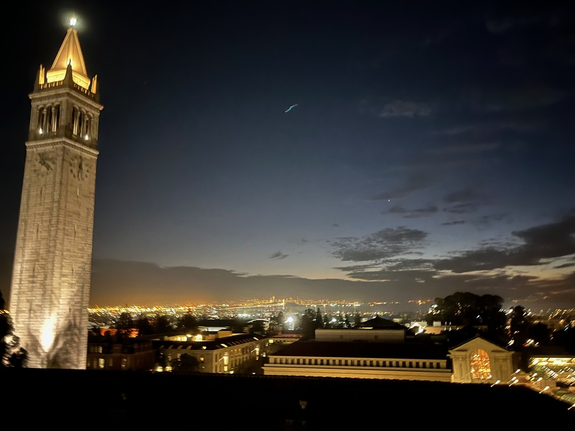
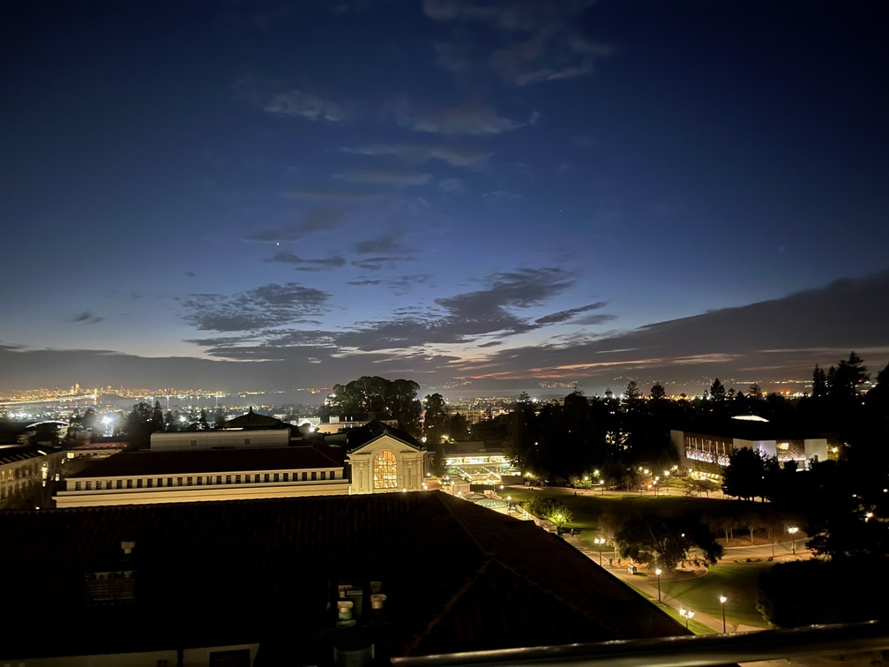
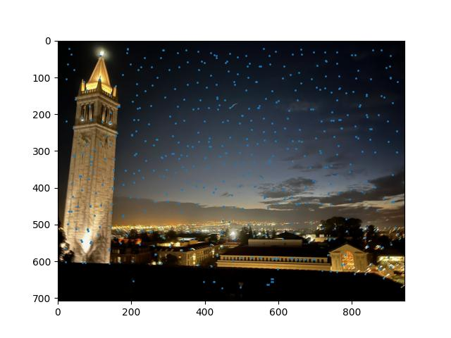
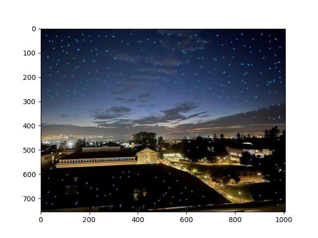
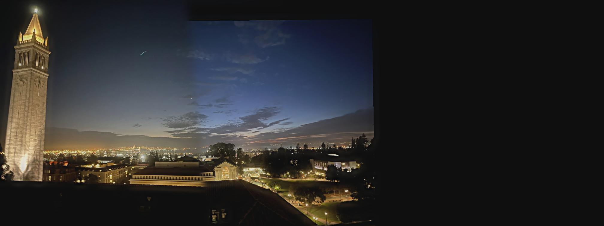
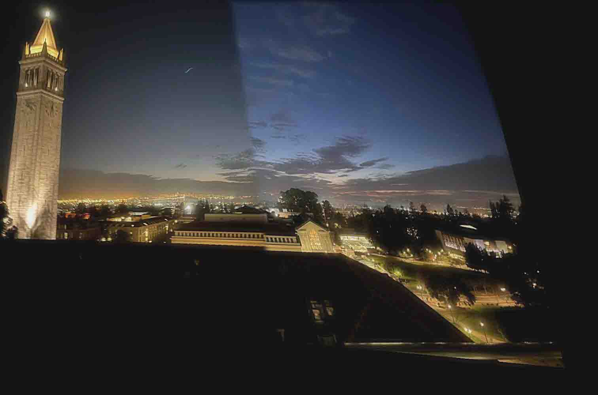
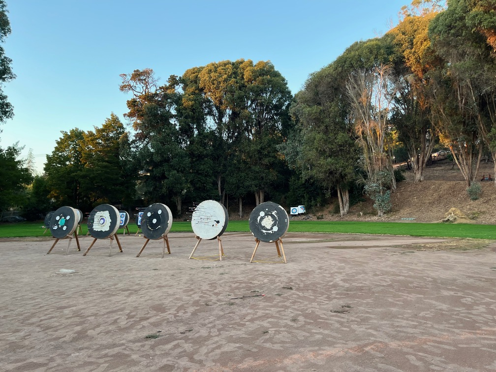
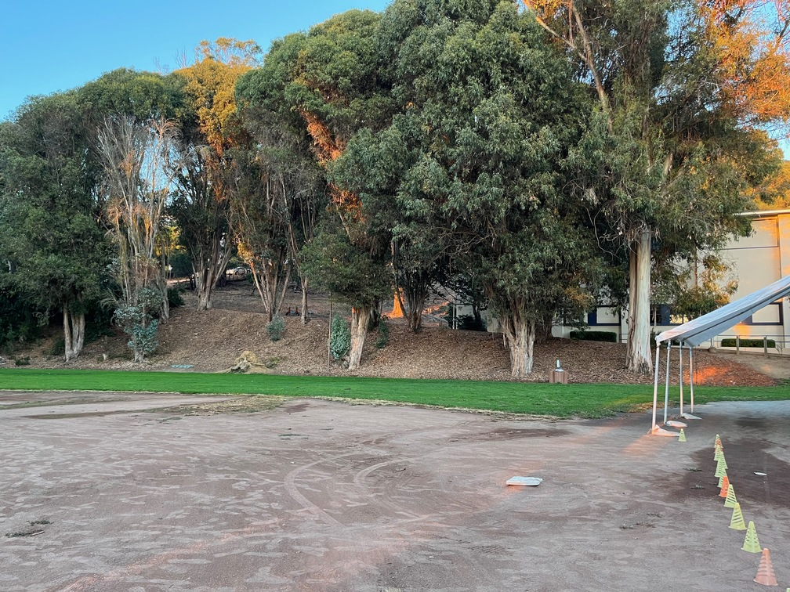
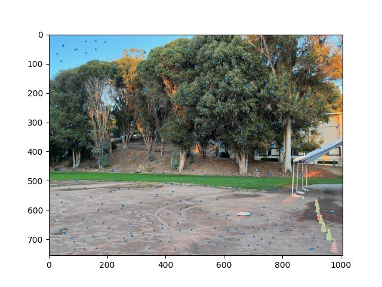
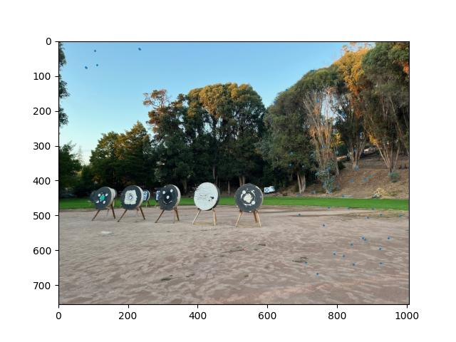
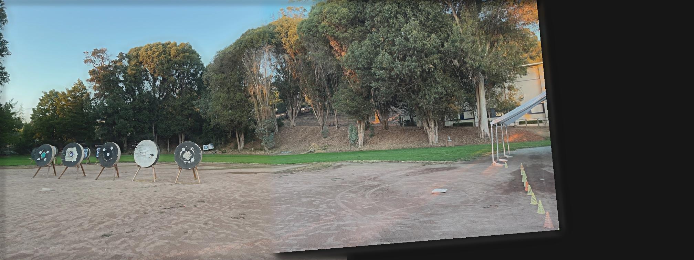
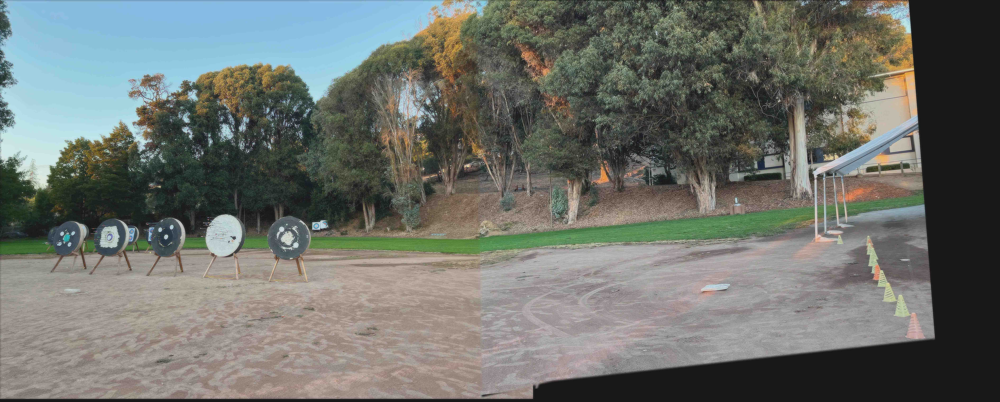
I think the coolest thing about this project was finding ways to remove outliers- it was satisfying seeing the number of points go down and being pruned to the correct points. It was interesting to work with actual noise rather than randomly generated ones, because you could see how real pictures are affected, and how you can clean it up.